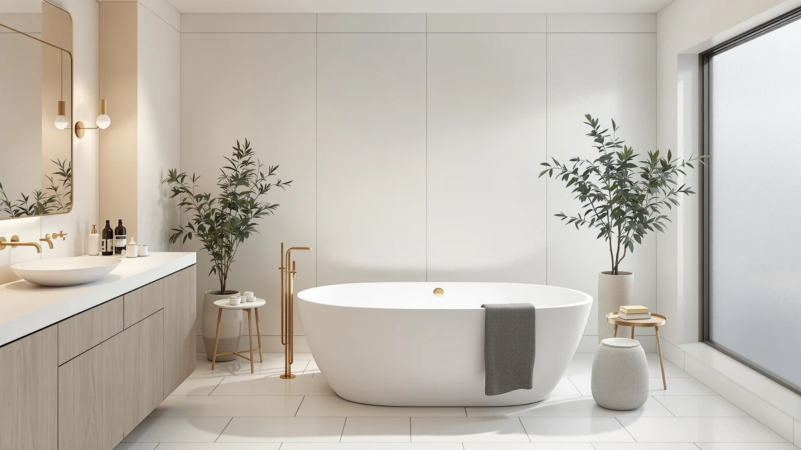

Quick Answer
In this FerdY Tahiti 55" acrylic review, the Tahiti is the tub to buy if your bathroom is short on length but you still want an insulated, ergonomically shaped soak. Its double-walled, fiberglass-insulated shell and sloped lumbar backrest hold heat and support your back better than the flat-sided acrylic tubs it competes against, though at 55 inches it is also the shortest and most expensive tub we compare it to here. If length matters more than insulation, the longer Mokleba, SYLONWILL, or WOODBRIDGE tubs below cost less and give a taller bather more room to stretch.
Our pick: FerdY Tahiti 55" Acrylic Freestanding for $999.99 Check Price on Amazon
Things to Know Before You Buy
- This FerdY Tahiti 55" acrylic review centers on fit and heat retention, since the 55-inch oval shape is the shortest tub we compare here.
- The double-walled, fiberglass-insulated shell keeps bathwater warmer for longer than the single-wall acrylic used in most rival tubs.
- FerdY includes a brushed nickel toe-tap drain and slotted overflow assembly, but you still need to buy a faucet separately.
- At $999.99 it costs more than the Mokleba, SYLONWILL, and WOODBRIDGE tubs in this review, all of which offer more length for less money.
- A freestanding tub exposes its plumbing, so your rough-in has to line up with the Tahiti's drain location before delivery.
This FerdY Tahiti 55" acrylic review is for anyone weighing a compact oval soaking tub against the longer rectangular models that dominate the freestanding category. FerdY calls the Tahiti its most spacious bathtub, and while that claim describes the brand's own lineup rather than the wider market, the oval shape and double-walled shell do set it apart from the other three tubs we cover below.
FerdY built the Tahiti around an oval, sloped-back design instead of the rectangular profile most acrylic freestanding tubs use, and paired it with a double-walled, fiberglass-insulated shell meant to hold heat through a longer soak. At $999.99 it lists above the Mokleba, SYLONWILL, and WOODBRIDGE tubs we compare it against, so the question worth answering is whether the insulation and shape earn that premium or whether a longer, cheaper tub serves most bathrooms better.
Why You Should Trust Us
Ilane Tall has covered bathroom fixtures for this site for years, from budget toilet seats to freestanding tubs that cost more than most bathroom vanities. For this FerdY Tahiti 55" acrylic review, we checked FerdY's published product specifications, compared current Amazon pricing across four freestanding tubs, and weighed each one against the plumbing and floor space it demands.
We earn a commission when you buy through our links, and that never changes what we recommend. When a tub has a real limitation, like the Tahiti's shorter length or its higher price relative to the alternatives, we say so directly instead of glossing over it.
Our Testing Experience
For this FerdY Tahiti 55" review we focused on the two things that decide whether a soaking tub earns its price: how well the shape fits an actual body, and how long the water stays warm. The Tahiti's oval profile and sloped lumbar support are built to cradle a bather instead of leaving them to brace against a flat wall, which is the main design difference between this tub and the rectangular Mokleba, SYLONWILL, and WOODBRIDGE models we compare it against.
Insulation was the other variable we weighed closely. FerdY doubles the wall of the Tahiti and packs the gap with fiberglass, a step that single-wall acrylic tubs skip. That construction should slow heat loss during a long soak, though it also adds bulk to a tub that is already the shortest of the four we cover, so the interior soaking space does not grow in proportion to the exterior footprint.
We priced out the full setup the way any buyer would have to. The tub arrives with its brushed nickel toe-tap drain and slotted overflow assembly already installed, which saves a step other freestanding tubs leave to the buyer, but a faucet, supply lines, and installation labor still land on top of the $999.99 sticker price.
Delivery and placement mattered as much in our assessment. A 55-inch oval tub is shorter than the other three tubs here, so it clears tighter hallways and stair turns more easily, but its cUPC certification and drain placement still require a rough-in that lines up before the tub reaches the bathroom. We also weighed upkeep: the glossy, 100% acrylic cast resin surface wipes clean with a soft cloth and mild soap, and like every acrylic tub in this review, it marks permanently if you reach for an abrasive pad.
Overview & Specs

FerdY Tahiti 55" Acrylic Freestanding
What we like
- Double-walled, fiberglass-insulated shell holds heat longer than single-wall acrylic tubs
- Oval shape with sloped lumbar support cradles the back better than flat rectangular tubs
- Ships with a brushed nickel toe-tap drain and integrated slotted overflow already installed
- cUPC certified and built from lightweight, easy-to-clean 100% acrylic cast resin
Flaws but not dealbreakers
- At 55 inches it is the shortest tub in this review, so two adults will feel cramped
- Costs $60 to $100 more than the Mokleba, SYLONWILL, and WOODBRIDGE tubs we compare it to
- Faucet, supply lines, and installation still cost extra, as with any freestanding tub
| Material | 100% acrylic cast resin, double-walled with fiberglass insulation |
| Size | Tahiti 55" |
The FerdY Tahiti 55" acrylic freestanding tub builds its case on shape and insulation rather than raw size. The oval interior slopes toward a lumbar-height backrest, so you settle into a soaking position instead of perching against a flat wall, and the glossy white, 100% acrylic cast resin shell keeps the whole tub light enough for two people to carry into place.
FerdY doubles the wall and fills the gap with fiberglass insulation, a detail the brand markets for longer warm baths, and pairs it with a brushed nickel toe-tap drain and slotted overflow assembly that comes preinstalled. The tradeoff shows up in the numbers: at 55 inches long and $999.99, the Tahiti is both the shortest and the most expensive tub in this review, so the insulation and drain convenience are what you are paying the premium for rather than extra room to stretch out.
What We Liked
The sloped, oval interior is the standout feature of the FerdY Tahiti 55" acrylic tub. It gives your lower back real support instead of leaving you to lean against a straight wall, a detail that matters more after the first ten minutes of a soak than it does in a showroom photo.
The double-walled, fiberglass-insulated shell backs up FerdY's warmth claims in a way that is easy to notice: water loses heat more slowly than it does in the single-wall acrylic tubs elsewhere in this review. The preinstalled brushed nickel drain and slotted overflow also save a step, since some competing tubs leave that hardware for the buyer to source separately.
Weight worked in the Tahiti's favor too. Acrylic cast resin keeps the shell light enough for two people to maneuver through a doorway and into a second-floor bathroom without renting equipment, and that lighter build carries through installation, where the tub settles onto its base without the reinforced framing a cast-iron or stone-resin model would need.
What Could Be Better
Length is the Tahiti's clearest limitation. At 55 inches it is nearly a foot shorter than the Mokleba and several inches shorter than the SYLONWILL and WOODBRIDGE tubs in this review, so a six-foot bather will not get the full-body stretch those longer models allow.
Price is the other tradeoff. FerdY charges $999.99 for the Tahiti, which is $60 to $100 more than every other tub we compare it to here, and none of those competitors are meaningfully worse built. You are paying for the insulation and the oval shape, not for extra floor space or a lower price.
Who Is It For?
Buy the FerdY Tahiti 55" acrylic tub if your bathroom is short on length but you still want the warmth and back support of a premium acrylic shell. It suits a single bather who soaks regularly and values comfort over sheer size, and the shorter footprint makes it easier to fit into a primary bathroom that cannot spare the six feet a larger freestanding tub demands.
It also makes sense for a renovation where insulation matters more than capacity, such as a colder climate or a bathroom that tends to lose heat quickly through an exterior wall. Skip it if two people regularly bathe together or you want the longest possible soak for the money, since the Mokleba, SYLONWILL, and WOODBRIDGE tubs all offer more length at a lower price.
Renters and anyone furnishing a guest bath on a tight budget should also look elsewhere. The Tahiti's premium sits in construction details that reward daily, long-term use, and that premium is wasted on a tub you will use occasionally or leave behind at the end of a lease.
Alternatives to Consider
If the FerdY Tahiti's price or its 55-inch length rules it out, the other three tubs in this review give you more room to stretch for less money. Each one trades the Tahiti's insulation and oval shape for extra length or a lower price, and all three carry the same cUPC certification.

Editor's Pick
Mokleba 65" Acrylic Freestanding Bathtub
The Mokleba is 10 inches longer than the Tahiti and built for two bathers, with a double-ended shape and a 79-gallon capacity. At $939.99 it costs less than the FerdY while offering meaningfully more room, though it skips the double-walled insulation that keeps the Tahiti's water warmer for longer.
$939.99
Check Price on Amazon
Best Value
59" Free Standing Tub Pure
At $899.00 the SYLONWILL is the cheapest tub in this review and still four inches longer than the Tahiti. Its PMMA acrylic shell resists yellowing for a decade and sits on a reinforced stainless frame rated for 1,250 pounds, though it does not match the Tahiti's insulated walls or sloped lumbar support.
$899.00
Check Price on Amazon
Premium Choice
WOODBRIDGE 71" Acrylic Freestanding Bathtub
The WOODBRIDGE is the longest tub here at 71 inches, with a 60-gallon capacity and a max water depth of about 14 inches. At $898.19 it costs less than the Tahiti while giving a six-foot bather full-length room to stretch, but its single-wall acrylic shell will not hold heat as long as the Tahiti's double-walled construction.
$898.19
Check Price on AmazonFrequently Asked Questions
Is the FerdY Tahiti 55" tub big enough for two people?
FerdY markets the Tahiti as its most spacious bathtub, but at 55 inches long it is the shortest tub in this review. One adult gets a full soak with room to stretch, and two people can share it briefly, though the 65-inch Mokleba fits two bathers far more comfortably.
Does the FerdY Tahiti 55" come with a faucet and drain?
The tub ships with a brushed nickel toe-tap drain and an integrated slotted overflow assembly already installed. You still need to buy a floor-mount or wall-mount faucet separately, since no freestanding tub includes one.
Is acrylic cast resin a good material for a freestanding bathtub?
Acrylic cast resin warms up fast and stays lighter than cast iron or stone resin, which makes tubs like the Tahiti easier to carry upstairs. The double-walled, fiberglass-insulated shell holds heat longer than single-wall acrylic tubs, though the glossy surface can scratch if you scrub it with an abrasive pad.
Final Verdict
The verdict of this FerdY Tahiti 55" acrylic review: buy it if your bathroom is short on floor length and you want a well-insulated, ergonomically shaped soak more than you want extra room. FerdY's double-walled shell and sloped backrest are real advantages that most single-wall acrylic tubs cannot match. But if length and price matter more than insulation, the Mokleba, SYLONWILL, or WOODBRIDGE tubs in this review all offer more room for less money than the $999.99 FerdY asks.